扉页
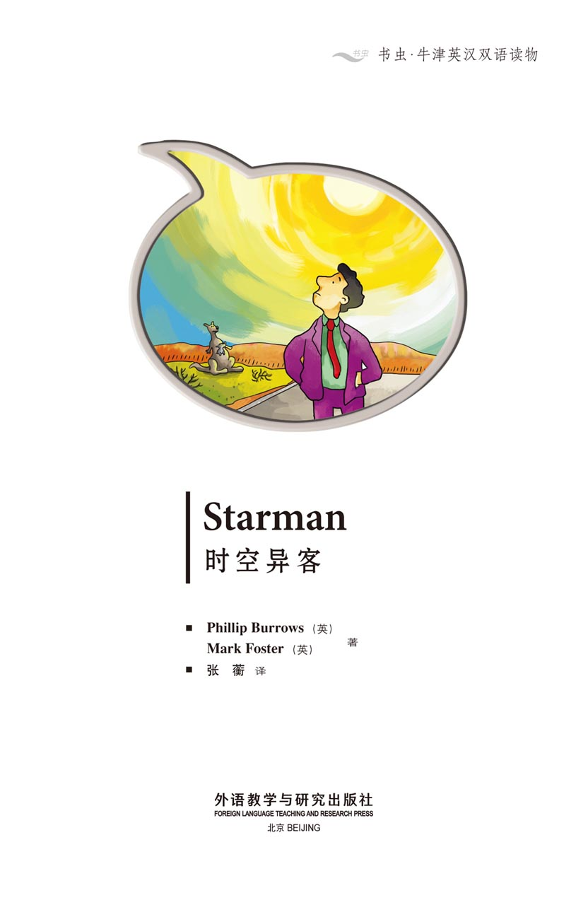
版权页
京权图字：01-2013-7816
Published by arrangement with Oxford University Press for sale in the People's Republic of China only and not for export therefrom. This edition is for sale in the mainland of China only, excluding Hong Kong SAR, Macao SAR and Taiwan.
© Oxford University Press 2008
Oxford is a registered trademark of Oxford University Press
图书在版编目（CIP）数据
时空异客：英汉对照／（英）伯罗斯（Burrows，P.），（英）福斯特（Foster，M.）著；张蘅译．—北京：外语教学与研究出版社，2013.11
（书虫·牛津英汉双语读物）
书名原文：Starman
ISBN 978-7-5135-3771-1
Ⅰ．①时… Ⅱ．①伯… ②福… ③张… Ⅲ．①英语—汉语—对照读物②短篇小说—英国—现代 Ⅳ．①H319.4：I
中国版本图书馆CIP数据核字（2013）第271152号
出版人 蔡剑峰
责任编辑 张红岩
封面设计 蔡 颖
出版发行 外语教学与研究出版社
社 址 北京市西三环北路19号（100089）
网 址 http://www.fltrp.com
版 次 2013年12月第1版
书 号 ISBN 978-7-5135-3771-1
制售盗版必究 举报查实奖励
版权保护举报电话：（010）88817519
内容简介
内容简介
太阳火辣辣的——你开着车，行驶在澳大利亚中部一条长长的公路上。
突然，你看到一个男子站在公路中央。他穿着高档的西服、体面的鞋子，但他不说话——一个字都不说。
你的车里有一把枪——你要怎么办？你必须小心！但你不能把他丢在这个炎热、荒无人烟的地方——方圆几百公里之内什么都没有——没有水，也没有吃的。
但那儿有别的东西——沃拉隆加附近的天空中有一道强烈的白光。
STARMAN
STARMAN
The sun is hot, hot, hot – you are driving along a long, long road in the centre of Australia.
Suddenly you see a man standing in the middle of the road. He is wearing an expensive suit and nice shoes, but he doesn't speak – not one word.
You have a gun in your car – what do you do? You must be careful! But you can't leave him here – there is nothing for hundreds of kilometres around – no water or food in this hot, empty place.
But there is something else out there – a very white light in the sky near Wolalonga.
目录
Starman
STARMAN
A big red car drives on a long, long road. In the car is a farmer, Bill. He is hot and tired. He wants to go home and have a bath.
Bill listens to the radio in his car and he sings. Bill likes singing. Sometimes people like Bill's singing – but not very often.
The song he is singing is called Hot, hot, hot.
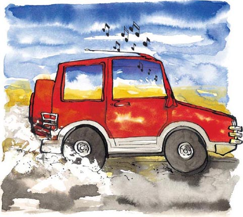
There is a sign on the side of the road. Bill reads it: Goondiwindi, 72 kilometres. Dirranbandi 136 kilometres. Bill must drive for a long time. His home is about a hundred kilometres away.
He rubs his eyes. The sun is very hot and the road is long. Bill does not want to go to sleep so he sings some more. A kangaroo hears him and jumps away. Bill laughs, then rubs his eyes again.
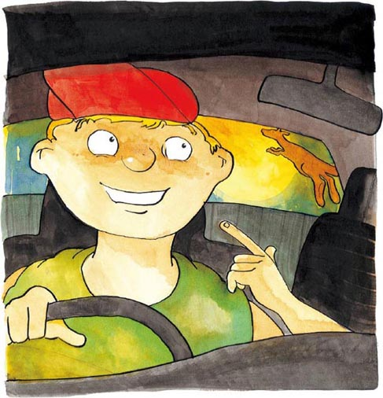
Just then Bill sees something. Suddenly he is not tired and he is not laughing. The hair on his head stands up. There is something on the road.
He stops the car and gets out. The thing is a long way in front of Bill. He cannot see what it is – but he does not like it.
Bill gets back in his car and drives slowly. The thing is moving – it is alive.
'What the...' Bill says quietly. 'It's a man! What's a man doing here?'
He thinks, 'There must be something wrong.'
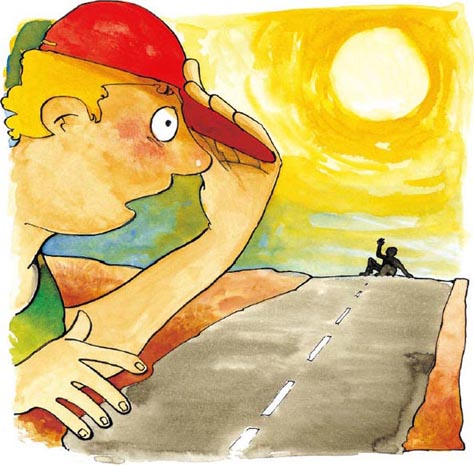
Bill stops his car ten metres from the man and looks out.
'Hello,' says Bill. 'Are you OK? Are you looking for something?'
The man does not move or speak. He is looking at the sky and smiling unhappily. Bill looks up too. He can see nothing.
There is a gun in Bill's car. He looks at it. 'I must be careful,' he thinks.
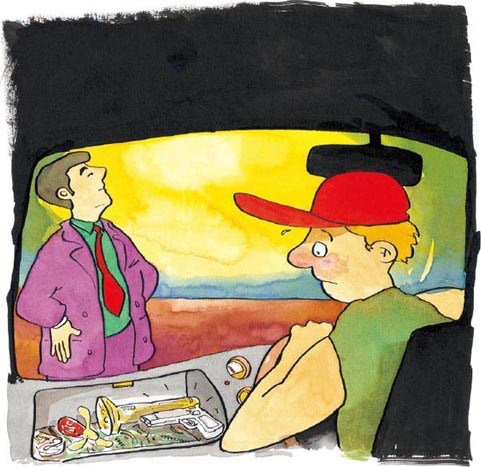
Bill drives five more metres. He can see that the man is about forty years old. He is wearing a good suit – but it is old.
'Hey! Are you OK?' Bill asks again. 'Can I help you?'
The man moves his head slowly to look at Bill. He says nothing then begins to walk. Bill watches him for a minute. He thinks, 'I must do something.'
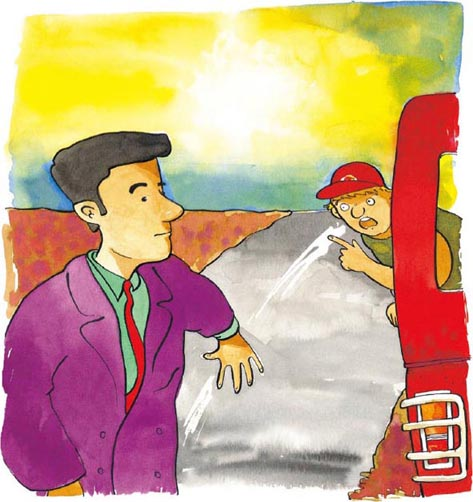
'Where are you going?' shouts Bill. 'There's nothing on that road. Do you have any water? The sun's very hot. Can you hear me?'
Bill does not know what to do. He cannot leave the man here. 'What is wrong with him?' he thinks. 'Is he ill?'
A lizard runs across the road. A big bird flies near the man. It looks down, hungrily. Near the road are some bones – a dead kangaroo.
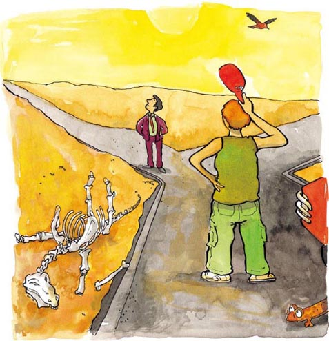
Bill is afraid – but he cannot drive away and leave the man.
The man looks very tired so Bill drives two more metres. 'Do you want to die out here?' There is no answer. 'Get in! I'm taking you home,' says Bill.
He opens the car door and gets out. He moves very slowly and talks very quietly. 'It's okay. You can come with me. Get in the car and sit down. I have some water in the car.'
Bill helps the man and he gets into the car. He is very dirty and tired. Bill gives him a drink. The man is thirsty and drinks a lot of water. 'Stop!' says Bill. 'Don't drink all the water. A little now, then more later.'
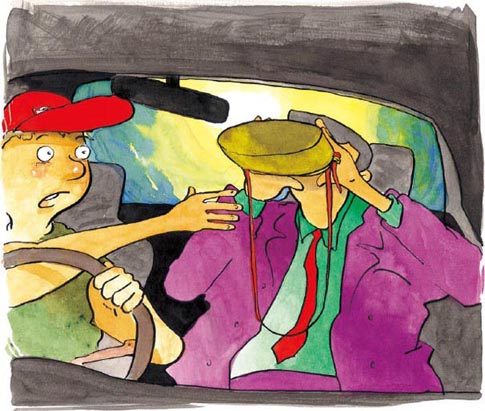
The car drives fast on the long, straight road. The two men sit and say nothing.
Bill listens to the news on the radio. There is rain in Adelaide. A man in Sydney is 125 years old today. A kangaroo is learning to talk. And a very white light is in the sky near Wolalonga.
Bill likes the news. Next to him, the man sleeps.
Bill looks at him. The man wears an expensive suit and nice shoes. Why is he out here in the sun, without a hat?
They drive for an hour before they get to Bill's house.
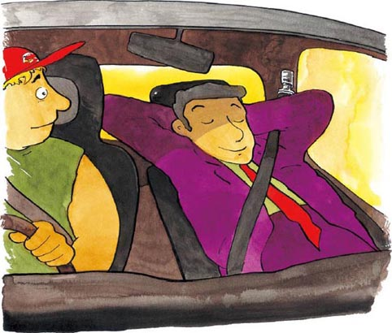
Bill leaves the man asleep in the car. He goes into the house and tells his wife, Emily, about the man. Emily always knows what to do. 'We must find out who he is then phone his home,' she says. 'Let's look in his pockets. Perhaps there is something with his name on it.'
Bill and Emily go to the car. They find a wallet in the man's pocket. There is a name – John Phillips – and a telephone number. There is also some money.
'This money is twenty-five years old!' says Bill to Emily. 'Why has he got old money?'
'John Phillips,' says Emily to the man. 'You're very interesting.' John suddenly opens his eyes and looks at her, smiling.

'Can you walk?' Emily asks John. He gets up slowly. 'You're ill. Let's put you into a bed.' Carefully, they help John out of the car.
Bill's dog sees John and is afraid. He runs away and sits under a tree. Bill and Emily help John upstairs and onto a bed. Ten minutes later he is sleeping again.
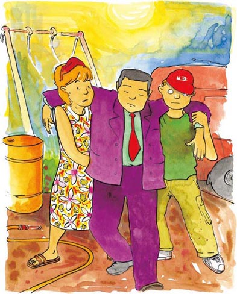
In the kitchen, Emily says: 'I don't understand this... It's not right. He's different... It's... Oh, I don't know...'
'I don't want him in our house. I am afraid of him,' says Bill.
'I know. I'm afraid, too. Let's call the Flying Doctor,' says Emily. 'Then we must talk to his family.'

Bill picks up the telephone and calls the doctor. He tells the doctor about John Phillips. 'I think he's ill. He's very tired and doesn't talk. He doesn't know who he is. Can you come quickly?'
The doctor lives about two hundred kilometres away. He must fly a plane to visit Bill. 'I'm coming now,' he says. 'Look out for me in half an hour.'
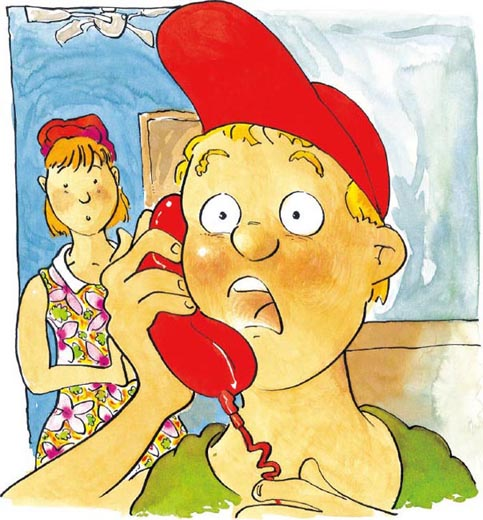
Bill puts the phone down. 'Okay. Let me talk to his wife,' says Emily. She takes the phone and calls the number. Somebody answers and Emily talks for a long time.
Bill hears her say: 'But he is here... No, it is John Phillips. We have his wallet – his name is in it... Hello! Hello! Are you there?... Oh. What? When?... I don't understand... Okay. Thank you. Goodbye.' When she stops talking, her face is white.
She looks at Bill and says: 'This is all wrong. "John Phillips is missing," his wife says.'
'For how long?' says Bill.
'Thirty years,' says Emily. 'His wife has a new husband now. They have three children!'

The Flying Doctor is late. After an hour he arrives in his plane.
'I'm sorry,' he says. 'This is a new plane – but sometimes it doesn't go very well. I must take it to a mechanic. But it doesn't matter now. I'm here.'
Bill tells him everything. The doctor asks a lot of questions, then goes to see the man. John Phillips is looking at the plane through the window.
'Hello, John,' says the doctor. 'I'm a doctor and I need to ask you some questions. Can you remember your name? Can you remember where you live?' John does not answer.
The doctor talks to Bill and Emily. He says: 'John hasn't got any broken bones... but I'm not happy about him. I want to take him to hospital.'
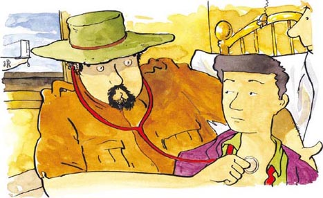
They put John in the plane next to the doctor. 'Phone us,' says Emily when the doctor gets in the plane. 'Phone us from the hospital.' Soon the doctor and John Phillips are high in the sky.
Suddenly John speaks for the first time. He talks slowly: 'I don't want to be here. I want to be with my friends. They are looking for me.'
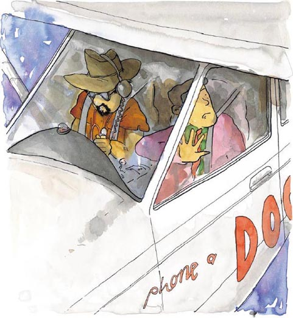
John stands up in the plane.
'Wait, you can't do that,' says the doctor. 'Sit down!'
John opens the door and says to the doctor: 'You can come too. Do you want to?'
'What?' shouts the doctor.
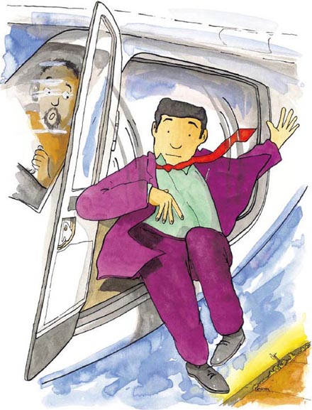
John looks into the doctor's eyes. The doctor cannot move. He cannot look away. It is cold in the plane but the doctor is hot. John's eyes are looking straight through him.
'Come with me. It's a good place. It's better than here.'
'How can I?' says the doctor quietly. Then John jumps.
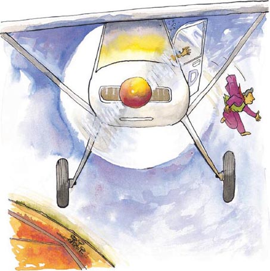
The doctor looks out of the window. John is falling – down, down, down. But the doctor can see a smile on his face.
'He isn't going to die,' thinks the doctor. 'He knows that.'
There are small trees below the plane. Cars drive on a long road. Kangaroos jump all around. John is very small now and he is falling fast.
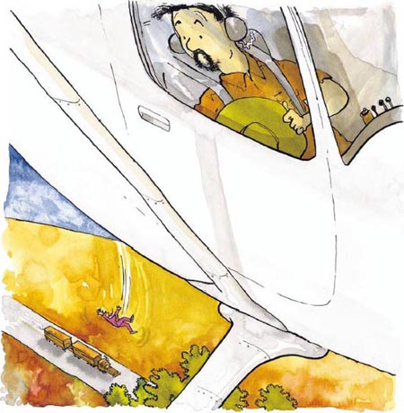
John is twenty metres above the trees. A kangaroo looks up, but John is not falling any more. A beam of light stops him and takes him away. Up, up, up.
The doctor closes his eyes. The light is very, very white. When he opens his eyes the light is not there. John is not there. The doctor sees something in the sky. Then there is nothing.
He is very unhappy – more unhappy than ever. 'I want to go too!' he says.
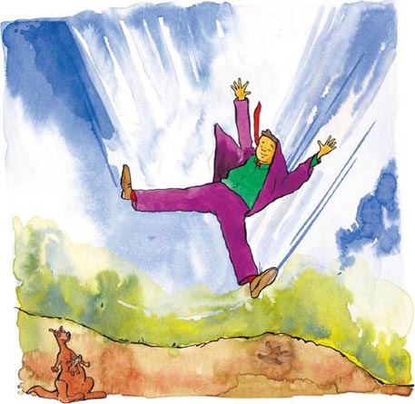
Roy Cole is a mechanic and he works in an airport. Today he is happy. The sun is nice and warm. Tomorrow is Saturday, and this weekend Roy is buying a new car. He is excited.
He is eating a sandwich when he hears the plane. He looks up and sees it in the sky. The plane is coming to the airport. It gets very near. In the plane, Roy can see a man.
'Who is this?' thinks Roy. 'I don't know this plane.' He puts his sandwich in his pocket.
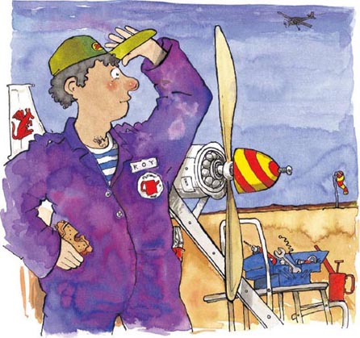
The plane stops at the airport and a man gets out. Roy begins to walk across to him.
The man stands still and looks at the sky. There is a small smile on his face. His suit is dirty and he looks tired.
'Oh dear!' thinks Roy. 'What's the matter with him?'
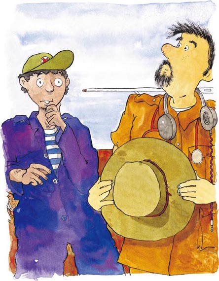
Roy likes to talk to people. He smiles, then talks to the man. 'Perhaps I can help him,' he thinks.
'Hi, I'm Roy. Who are you?' Roy puts his hand out but the man does not move. Roy puts his hand in his pocket and looks at the plane.
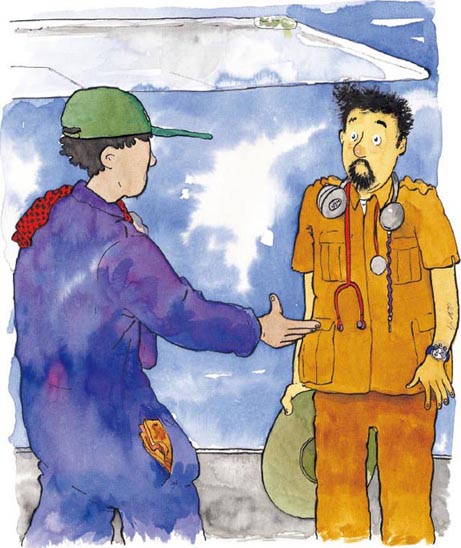
Roy says to the man, 'Wow! What a wonderful plane. It's more than thirty years old. It's an old Flying Doctor's plane, isn't it?'
Suddenly the man looks at Roy and says: 'Flying Doctor. Yes, that's right. I'm a Flying Doctor.'
'A Flying Doctor? Of course you are,' says Roy with a smile. 'Where do you live? Where do you want to go?'
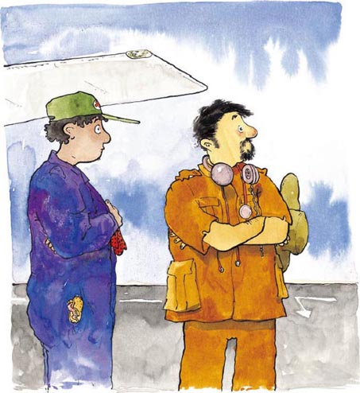
The doctor begins to get into the plane again. Then he stops and looks into Roy's eyes. Roy hears him say: 'I live a long way away now. I must go back. Do you want to come with me?'
Suddenly Roy feels hot. The doctor's eyes are looking straight through him. 'How can I?' says Roy.
'I can help you. Get in my plane,' says the doctor.
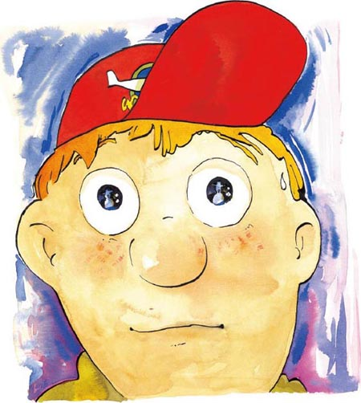
GLOSSARY 词汇表
GLOSSARY 词汇表
bath n. sit in water and wash your body 洗澡
broken adj. in more than one piece 破碎的
doctor n. a person who works with people who are ill 医生
farmer n. a person who works on the land 农夫，农场主
gun n. you can shoot people with this 枪
hospital n. a place where you take people who are ill 医院
husband n. the man who a woman marries 丈夫
jump v. to move quickly through the air 跳
mechanic n. a person who works with machines 机械师
missing adj. nobody knows where he or she is 失踪的
news n. you read this in the newspaper or watch it on the TV 新闻
pocket n. a place in your shirt or trousers where you can put things 衣袋，口袋
rub v. to move your hands over 揉，搓
shout v. to speak loudly 大声说，叫
song n. music that you sing 歌，歌曲
straight adj. in a line 直的
suit n. trousers and jacket 套装，西装
unhappy adj. not happy 不快乐的
ACTIVITIES 阅读练习
Starman
ACTIVITIES
阅读练习
ACTIVITIES
Before Reading
1 Look at the front and back covers of the book. Now answer these questions.
1) Where does the story happen?
a In the mountains.
Yes □／No □
b In the city.
Yes □／No □
c In a hot country.
Yes □／No □
2) What sort of book is it?
a An amusing story.
Yes □／No □
b A love story.
Yes □／No □
c A science fiction story.
Yes □／No □
3) A man is lost in the desert. What does he need?
a A hat.
Yes □／No □
b Some water.
Yes □／No □
c A hair dryer.
Yes □／No □
d Food.
Yes □／No □
4) What do you think happens to the man?
a He dies and a kangaroo eats him.
Yes □／No □
b A farmer rescues him and takes him home.
Yes □／No □
c He finds a horse and rides to a town.
Yes □／No □
ACTIVITIES
While Reading
1 Answer these questions.
1) What song is Bill singing?
2) How far is it from Goondiwindi to Dirranbandi?
3) What does Bill see?
4) What animal's bones are?
2 Answer these questions.
1) What does Bill give to John?
2) How old is the man in Sydney?
3) Put these sentences in the correct order.
Number them 1-4.
a □ Bill goes in the house.
b □ Bill phones the doctor.
c □ Emily looks in John's pockets.
d □ Bill and Emily help John into bed.
4) How does the Doctor get to his patients?
5) What does the dog do when he sees John?
3 Who says these words?
1) 'Okay. Let me talk to his wife.'
2) 'This is a new plane – but sometimes it doesn't go very well.'
3) 'I want to be with my friends. They are looking for me.'
4) 'Phone us from the hospital.'
5) 'He isn't going to die.'
4 Answer these questions about John.
1) What colour is his suit?
2) Why is he falling from the plane?
3) Why doesn't he fall to the ground?
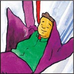
5 Answer these questions about the doctor.
1) Why does the Doctor close his eyes?
2) Where does the Doctor say he lives?
3) What type of Doctor is he?
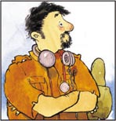
6 Answer these questions about Roy.
1) Where does he work?
2) Why is he happy?
3) Why does he feel hot?
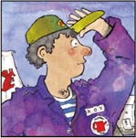
ACTIVITIES
After Reading
1 Finish these sentences.
1) John is thirsty because...
2) Emily takes John upstairs because...
3) John's wife is surprised because...
4) The Doctor takes John to hospital because...
2 Imagine John meets his wife after thirty years. What does he say to her? Include these words: desert hot light children home sky afraid friends
____________________________________________________________________________________________________________________________________________________________
3 Match the beginnings and endings of these sentences.
1) Bill is a farmer and...
2) After the plane lands...
3) Emily picks up the phone...
4) As they drive, John falls asleep...
5) John jumps out of the plane...
6) ... but does not hit the ground.
7) ... because he is very tired.
8) ... Roy walks towards to the Doctor.
9) ... and talks to John's wife.
10) ... he drives a red car.
TRANSLATION 参考译文
TRANSLATION 参考译文
Starman
时空异客
一辆红色大轿车行驶在长长的公路上。坐在车里面的是农场主比尔。他又热又累，想回家洗个澡。
比尔在车里听着广播，哼着歌。比尔喜欢唱歌。有时候大家也喜欢听他唱歌，但这样的时候并不多。
他现在正在唱《热，热，热》。
路边有一个路标。比尔看了一眼：贡迪温迪，72公里；迪兰班代，136公里。比尔还要开很长时间。他的家在大约100公里外。
他揉了揉眼睛。骄阳似火，长路漫漫。为了不让自己睡着，比尔又唱了几首歌。一只袋鼠听到他的声音跳走了。比尔哈哈大笑，然后又揉了揉眼睛。
就在这时，比尔看见了什么。他顿时倦意全消，不再大笑。他的头皮发麻，寒毛倒竖。路上有个什么东西。
他停下来，下了车。那东西在比尔前方很远处。他看不清是什么，但感到不是什么好东西。
比尔回到车里，慢慢地开。那个东西在动——它是活的。
“会是什么……”比尔嘀咕道，“是个男人！一个男人在这里干什么？”
他想：“肯定出了什么事儿。”
比尔在距离男子10米远处停下车，向他望去。
“你好！”比尔说，“你没事吧？你在找什么东西吗？”
男子不动，也不说话。他凝视着天空，脸上带着苦笑。比尔也抬头看，但什么都没看见。
比尔车里放着一把枪。他看了一眼枪，心想：“我得小心。”
比尔把车又往前开了5米。他看到这个男子在40岁上下，穿着一身体面的西装——就是有点旧。
“嘿！你没事吧？”比尔又问了一遍，“要我帮忙吗？”
男子慢慢地转过头，看着比尔。他一声也没吭，然后迈开腿走了。比尔盯着他看了一会儿。“我得做点什么。”他想。
“你要去哪里？”比尔大喊，“那条路上什么都没有。你有水吗？太阳很大。你能听见我说话吗？”
比尔不知道该怎么办，但是他不能把这个人丢下不管。“他怎么了？”他寻思着，“他病了吗？”
一只蜥蜴从公路上窜了过去。一只大鸟飞到男子附近，虎视眈眈地俯视着。路边有一些尸骨——是一只死去的袋鼠。
比尔很害怕——但他不能丢下这个男子不管自己开走。
男子看上去很疲惫，于是比尔又往前开了两米。“你想死在这里吗？”男子没有回答。“上车吧！我送你回家。”比尔说。
比尔打开车门，下了车。他的动作很缓慢，说话声音也很轻。“没事的。你可以跟我来。坐到车上去，我车里有水。”
比尔扶男子上了车。男子灰头土脸，神情疲倦。比尔把水递给他。男子很渴，喝了好多水。“歇口气！”比尔说，“别一下把水喝完。先喝一点儿，过一会儿再喝。”
车在又长又直的公路上疾驰。两个男人坐着，没说一句话。
比尔听着新闻广播。阿德莱德下雨了。悉尼有个男人今天满125岁。一只袋鼠在学说话。沃拉隆加附近的天空出现了一道强烈的白光。
比尔听得起劲儿，而他身边的男子则睡着了。
比尔打量着他。男子穿着高档的西装、体面的鞋子。他为什么要跑到这里待在太阳底下，连顶帽子都没戴？
他们又开了一个小时，到了比尔家。
比尔把熟睡的男子留在车上，自己进屋把男子的事告诉了妻子埃米莉。埃米莉总是能够想到办法。“我们必须搞清楚他是谁，然后联系他家里人。”她说，“我们翻翻他的口袋，说不定里面有什么东西会有他的名字。”
比尔和埃米莉来到车旁。他们在男子的口袋里找到一个钱包。钱包里面有一个人名——约翰·菲利普斯——和一个电话号码，还有一些钱。
“这是25年前的钱！”比尔对埃米莉说，“他为什么带着旧钱呢？”
“约翰·菲利普斯，”埃米莉对男子说，“你很有意思。”约翰突然睁开眼睛，微笑地看着她。
“你能走路吗？”埃米莉问约翰。他慢慢地起身。“你病了。我们扶你去床上。”他们小心翼翼地扶约翰下了车。
比尔家的狗看到约翰，显得很害怕。它跑到一棵树下蹲了起来。比尔和埃米莉扶约翰上了楼，让他躺到床上。十分钟后，他又睡着了。
在厨房，埃米莉说：“我搞不懂……这件事不对劲。他看起来不大寻常……这……哦，我不知道……”
“我不想让他待在我们家。我害怕他。”比尔说。
“我明白，我也害怕。我们请飞行医生来一趟，”埃米莉说，“然后我们得联系上他的家人。”
比尔拿起电话打给医生。他给医生讲述了约翰·菲利普斯的情况。“我觉得他病了。他很累，又不说话。他不知道自己是谁。您能快点儿来吗？”
医生住在大约200公里外。他得开飞机来比尔家。“我现在就去，”他说，“半小时后注意迎我一下。”
比尔放下电话。“好了，我来给他妻子打个电话。”埃米莉说。她拿起电话，拨了号码。有人接了，埃米莉聊了很久。
比尔听见她说：“但他的确在这里……不，他确实是约翰·菲利普斯。我们这儿有他的钱包——里面有他的名字……喂！喂！您在吗？……哦。什么？什么时候？……我不明白……好。谢谢您，再见。”她说完话时脸色煞白。
她看着比尔说：“完全不对头。‘约翰·菲利普斯失踪了。’他妻子说的。”
“失踪多久了？”比尔说。
“三十年了。”埃米莉说，“他妻子现在有了新的丈夫。他们都有三个孩子了！”
飞行医生来晚了。一个小时后他才开着飞机赶到。
“抱歉，”他说，“这是一架新飞机——但有时候不太好开。我得找机械师修一下。不过现在没事了，我到了。”
比尔把事情的经过都告诉了医生。医生问了很多问题，接着去看那个男子。约翰·菲利普斯正透过窗户看着飞机。
“你好，约翰。”医生说，“我是医生，我需要问你一些问题。你记得你的名字吗？你记得你住在哪儿吗？”约翰没有回答。
医生转而与比尔和埃米莉说话。他说：“约翰身上没有任何骨折……但我对他的情况不放心。我想带他去医院。”
他们把约翰弄到飞机上，在医生旁边坐下。“给我们打电话，”医生上飞机时埃米莉嘱咐道，“到医院给我们打电话。”很快，医生和约翰·菲利普斯飞上了高空。
突然，约翰说话了，这是他第一次开口。他语速缓慢：“我不想待在这里。我想和朋友们在一起，他们在找我。”
约翰在机舱里站起来。
“等等，你不能那样，”医生说，“快坐下！”
约翰打开舱门，对医生说：“你也可以来。你想来吗？”
“什么？”医生大声喊道。
约翰盯着医生的双眼。医生无法动弹，也无法往别处看。飞机里冷飕飕的，但医生却感觉发热。约翰的眼睛直勾勾地盯着他。
“跟我来。那是个好地方。比这儿强。”
“我怎么去？”医生轻声问。这时约翰跳了下去。
医生往窗外望去。约翰正在不断地下落。但医生看到他脸上带着微笑。
“他不会死，”医生心想，“他知道自己不会死。”
飞机下方是小树丛。汽车在长长的公路上行驶。袋鼠在四处蹦跳。约翰现在变得很小，他在快速下落。
约翰落到树丛上方20米处。一只袋鼠仰头看着，但约翰不再下落了。一束光托住了他，带他不断上升。
医生闭上双眼。那束光异常地白。当他睁开眼睛，光已经不见了。约翰也不见了。医生看到天上有什么东西，然后又没了。
他很不开心——比以往任何时候都不开心。“我也想去！”他说。
罗伊·科尔是一位机械师，在机场工作。今天他心情不错。阳光暖暖的。明天是星期六，这周末罗伊要买一辆新车。他很兴奋。
他正吃着三明治，突然听见了飞机的声音。他抬头望去，看见了天上的飞机。飞机正往机场飞来，离得很近了。罗伊看见飞机里有个男人。
“他是谁？”罗伊想，“我没见过这架飞机。”他把三明治放进口袋里。
飞机降落在机场，一个男人下了飞机。罗伊迈步向他走过去。
男子一动不动地站着，凝视着天空。他脸上挂着一丝淡淡的笑容。他的衣服脏兮兮的，人看上去很疲惫。
“哦，天哪！”罗伊想，“他是怎么了？”
罗伊喜欢和人交谈。他微微一笑，然后跟男子搭讪。“也许我能帮到他。”他想。
“嘿，我是罗伊。你是谁？”罗伊伸出手，但男子没有动。罗伊把手放回口袋，看着飞机。
罗伊对男子说：“哇！这飞机真棒。有30多年机龄了，是一架老式的飞行医生专用飞机，对吗？”
突然，这名男子看着罗伊说：“飞行医生。对，说得对。我是一名飞行医生。”
“飞行医生？你当然是。”罗伊微笑着说，“你住在哪儿？想去什么地方？”
医生要回到飞机上，忽又停下来，盯着罗伊的眼睛。罗伊听见他说：“我现在住在很远的地方，必须要回去。你想和我一起去吗？”
突然，罗伊感到身上发热。医生的眼睛直勾勾地盯着他。“我怎么去呢？”罗伊问。
“我可以帮你。到我的飞机上来。”医生说。
封底
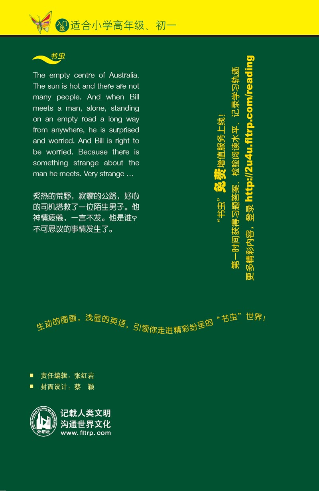